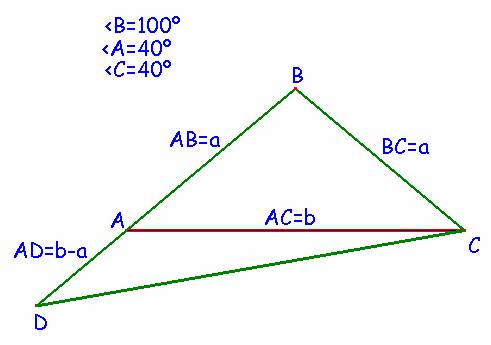
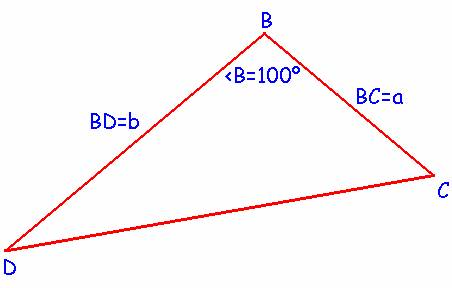
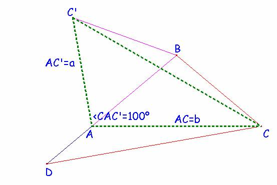
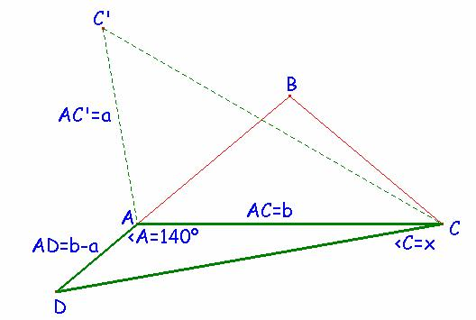

Problema 69.-
Se tiene un triángulo
isósceles ABC con ABC =100º.
Se construye D en la semirrecta de origen B que contiene a A
tal que CA=BD. Calcular el ángulo ACD.
|
 Construcción del
triángulo inicial, donde CA = BD = b |
|
Consideramos ahora
el triángulo DBC siguiente:  |
|
Como quiera que
construyendo el triángulo equilátero exterior de base el lado AB = a,
obtenemos el triángulo CAC’ equivalente al
anterior DBC, pues tiene dos lados iguales así como el ángulo que
forman.  Luego entonces CC’
= CD y así el triángulo CBC’ es también isósceles de lados iguales BC = BC’ =
a, y con ángulos en la base iguales a 10º ya que el ángulo en B sería igual a
100º+60º =160º. Por tanto,
aplicando el teorema de los senos en este triángulo obtenemos que: ; ; En definitiva: CD=2.a.cos10º |
|
Con esta expresión
de la medida del lado CD nos vamos a ir al triángulo ACD, volviendo a aplicar
otra vez el teorema de los senos:  2.sen x .cos
10º = (b-a)/a .sen 40º = (b/a – 1). sen 40º; Ahora bien, según
el primer triángulo ABC, cos 40º = b
/2×a Luego: 2.sen x .cos
10º = (2.cos 40º – 1). sen
40º = sen 80º – sen 40º. Teniendo en cuenta
que: sen 80º – sen 40º = 2. cos
60º sen 20º = 2. ½ .2. sen 10º. cos 10º entonces resultará
que: 2.sen x .cos 10º = 2. sen
10º. cos 10º de donde de
deducimos que: sen x = sen 10º y, como el ángulo en A es
obtuso, no queda más remedio que ser x = 10º . (!!) |
Solución de F. Damián Aranda Ballesteros profesor de Matemáticas del IES Blas Infante en Córdoba